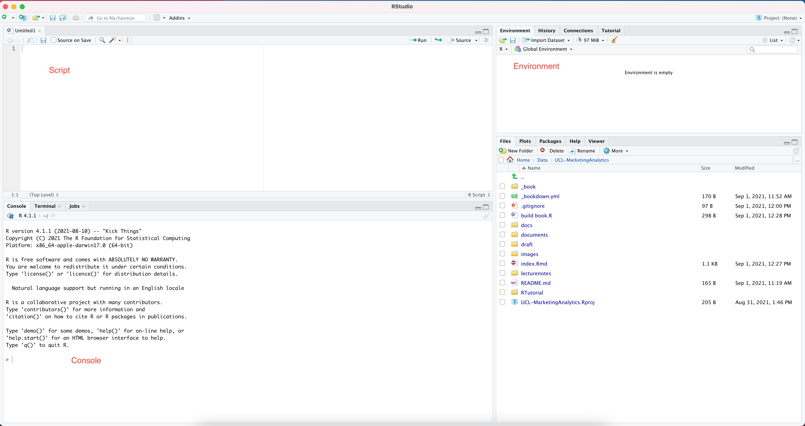
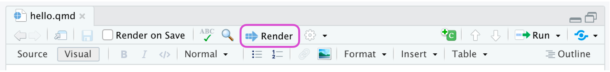
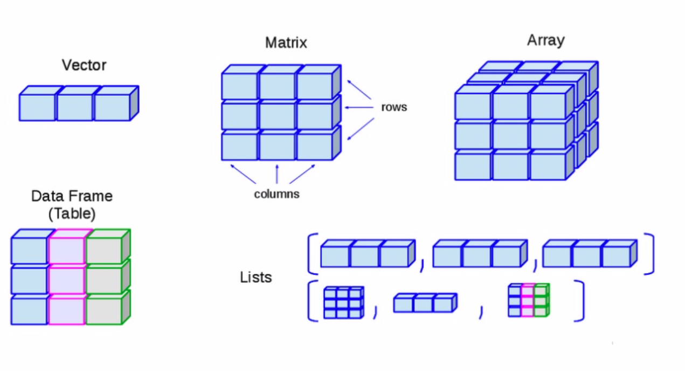

print('Hello World')[1] "Hello World"Last Updated 28 Sep 2022
Primary language is Python
Secondary language is R
R project was initiated by Robert Gentleman and Ross Ihaka (Univ of Auckland) in 1991; both are statisticians, who later made the language open-source.
Since 1997, R has been developed by the R Core Team on CRAN.
As of January 2022, it has 18,728 contributed packages. As of March 2022, R ranks 11th in the TIOBE index1; the language peaked in 8th place in August 2020.
Super powerful data analytics and visualizations, including2
Data wrangling (dplyr) and data visualization (ggplot)
Econometrics (numerous packages)
Predictive analytics (numerous packages)
Write beautiful reports/dissertations/presentations using quarto
Write your MSc dissertation (highly recommended; super efficient)
Effortlessly build websites. I built and maintain my personal website and the marketing course website all in R.
| R | Python | |
|---|---|---|
| Language purpose | R is a statistical language specialized in the data analytics and visualization. Best for data science, may not be robust for production environment. | Python is a general-purpose language that is used for the deployment and development of various projects. Best for production environment. |
| Data analytics | R is better at statistical models and econometrics. | Python is better at machine learning due to support from PyTorch and TensorFlow. |
| IDEs | RStudio | Many options such as Jupyter Notebook, Spyder, Pycharm, etc. |
| Targeted users | Primary users of R include researchers in academia and data scientists, who heavily rely on data analyses and visualization. | Primary users of python include developers and programmers. |
R is the programming language, and we need a “place” to write codes. This place is called an Integrated development environment (IDE).
RStudio is THE BEST R IDE to date. And it’s interface consists of the following:
script: (top left) where you do the coding
console: (bottom left) where you can run commands interactively with R and see code outputs
environment: (top right) a list of named objects that we have generated
history: (top right) the list of past commands that we have used
help: (bottom right) user manuals of functions available in R
package: (bottom right) a collection of ready-to-use packages written by others

You can write codes interactively in the R console. See an example: Type the following code into your console and see what happens.
print('Hello World')[1] "Hello World"Often used for simple exploratory tasks, where you don’t need to keep a record of codes.
.R scriptR script is a text-readable file ending with .R suffix. See an example.
codes can be run line-by-line or sourced altogether
All texts in the script will be treated as R codes unless commented out.
Often used for project development and deployment, where you don’t need to communicate results to others
.qmd scriptQuarto3 files have a .qmd suffix. You can think of Quarto as Microsoft Word that can run R codes.
Quarto can create dynamic content with Python and R, conveniently combining data analytics work with beautiful reporting.
Let’s create a new quarto file together!
You can think of YAML header as a MS Word template, which determines how your final report looks like (font, font size, color, margins, etc.).
The YAML header is typically at the beginning of a document, separated from the main text by three dashes (---). YAML will not appear in the final report.
To make life easier, I will set YAML headers for all .qmd files for you in Marketing Analytics module.
RStudio provides two ways to edit a quarto file (1) visual mode and (2) source mode.
RStudio’s visual editor offers an WYSIWYM (Microsoft Word like) authoring experience for markdown
In the source mode, you can edit the file using markdown syntax

Create a new quarto file from RStudio with the following level-1 and level-2 headers
Basics of R
Vectors
In qmd files, we write actual R codes in code chunks identified with {r}.
You can run each code chunk interactively by clicking the render icon. RStudio executes the code and displays the results below the code chunks.
To insert a code chunk, click Insert ->Code Chunk -> R.
See an example and try on your computer!
print('R is the Best Language! Better than Python! And dont tell David I said this!')[1] "R is the Best Language! Better than Python! And dont tell David I said this!"Insert the above R code block in your quarto file under any section.
At the end, when codes and main texts are ready, use the Render button in the RStudio IDE to render the file.
The rendered report will be in the same folder with your qmd file.

Render your quarto file into a document and see how it looks like.
The available YAML fields vary based on document format
Markdown syntax
Quarto (recommended to be reviewed after-class)
R is an object-oriented language, so we will be working on named objects.
We use the left arrow <- to create a named object, which assigns the objects on the RHS to the name on the LHS.4
x <- 3
x[1] 3# Question: why Wei chooses these two numbers?
x^2[1] 9x^3[1] 27Insert a code block in your quarto file, which does the following:
For a variable to be valid, it should follow these rules
It should contain letters, numbers, and only dot or underscore characters.
It cannot start with a number (eg: 2iota).
# 2iota <- 2# .iota <- 2# _iota <- 2# mean <- 2It’s good practice to use memorable names to name an object
In R, a function takes object(s) as input, run specific actions on the object(s) defined by the function, and then return an outcome object.
mean, which computes the average of several numbers.a <- 1:3 # which generates a sequence 1,2,3
a[1] 1 2 3mean(a)[1] 2We will heavily rely on functions to conduct data analyses. For how to use a new function, search the function in RStudio’s help panel.
Description: what the function does in a nutshell
Usage: how to call the function
Arguments: how you would like to run the function
Value: what will be returned
Examples: examples of how to use the function
The base R already has many useful built-in functions to perform basic tasks, but as data scientists, we need more.
To perform certain tasks (such as a machine learning model), we can definitely write our own code from scratch, but it takes lots of (unnecessary) effort. Fortunately, many packages have been written by others for us to directly use.
install.packages(). R will download the package.install.packages('praise')Error in contrib.url(repos, "source"): trying to use CRAN without setting a mirrorlibrary(). Every time you restart the RStudio, packages need to be reloaded.library(praise)praise() is a function in the praise package.praise()[1] "You are epic!"Installation of a package is only needed for the first time. After installation, just need to reload the packages using library() every time your restart RStudio.
Below are the complete list of objects in R.

To make the best of the R language, you’ll need a strong understanding of the basic data types and data structures and how to operate on them. Data structures are very important to understand because these are the objects you will manipulate on a day-to-day basis in R.
# Numeric Vector
num2 <- 2.5
log(num2)[1] 0.9162907num2^2[1] 6.25exp(num2)[1] 12.18249TRUE is equivalent to 1 in R; FALSE is equivalent to 0.log1 <- TRUE
log2 <- FALSEstr1 <- "1 + 1 = 2"country <- c('UK','Spain','Italy','Multiverse')
factor(country)[1] UK Spain Italy Multiverse
Levels: Italy Multiverse Spain UKWe can use class() to check the type of an object in R.
a <- '1+1'
class(a)[1] "character"b <- 1+1
class(b)[1] "numeric"This is very useful when we first load data from external databases, we need to make sure variables are of the correct data types.
Sometimes, data types of variables from raw data may not be what we want; we need to change the data type of a variable to the appropriate one.
See the following example:
a is a string, and we cannot use mathematical operations on it, or R will report errors.a <- '1'
class(a)[1] "character"a + 1Error in a + 1: non-numeric argument to binary operatora to a numeric value. To convert from character to numeric, we use as.numeric()b <- as.numeric(a)
class(b)[1] "numeric"Vector can be created using the function c() by listing all the values in the parenthesis, separated by comma ‘,’.
x <- c(1, 3, 5, 10)
x[1] 1 3 5 10class(x)[1] "numeric"Vectors must contain elements of the same data type. Otherwise, it will implicitly convert elements into the same type.
x <- c(1, "intro", TRUE)
class(x)[1] "character"You can measure the length of a vector using the command length()
x <- c('R',' is', ' fun')
length(x)[1] 3y <- c()
length(y)[1] 0It is also possible to easily create sequences with patterns
seq() to create sequence with fixed steps# use seq()
seq(from = 1, to = 2, by = 0.1) [1] 1.0 1.1 1.2 1.3 1.4 1.5 1.6 1.7 1.8 1.9 2.0:1:5[1] 1 2 3 4 5rep() to create repeated sequences.# replication using rep()
rep(c("A","B"), times = 5) [1] "A" "B" "A" "B" "A" "B" "A" "B" "A" "B"You can use c() to combine different vectors; this is very commonly used to concatenate vectors.
x <- 1:3 # from 1 to 3
y <- c(10, 15) # 10 and 15
z <- c(x,y) # x first and then y
z[1] 1 2 3 10 15Create a sequence of {1,1,2,2,3,3,3} using different methods.
We put the index of elements we would like to extract in a square bracket [ ].5
x <- c(1,3,8,7)
x[2][1] 3x[1:2] [1] 1 3x[c(1,3,4)] [1] 1 8 7R is a vectorized language, meaning by default it will do vector operation internally.
x <- c(1,3,8,7)
x+2[1] 3 5 10 9x^2[1] 1 9 64 49When the length of vectors do not match, R will still do it for you without reporting error but a warning message. As you can see, even if the length of vectors does not match, R can still return an output but throws a warning message. It’s important to check the warning messages when there is any!
x <- c(1,3,8,7)
y <- c(1,3,4) # careful!!! does not report error
x + yWarning in x + y: longer object length is not a multiple of shorter object
length[1] 2 6 12 8Create a geometric sequence {2,4,8,16,32} using seq().
x <- c(1,3,8,7)
y <- c(2,3,7,8)
x > y[1] FALSE FALSE TRUE FALSEx == y[1] FALSE TRUE FALSE FALSEx <- c(1,3,8,7)
x < 6 # is each element lower than 6?[1] TRUE TRUE FALSE FALSEx == 10 # is the element equal to 10?[1] FALSE FALSE FALSE FALSEwhich()which(x == 8) # which element equals 8 [1] 3which.max(x) # which is the max element [1] 3which.min(x)[1] 1Find the minimum value of vector x using which()
Sometimes, we may need to operation on multiple relational operations using and or no
T & F # and[1] FALSET | F # or[1] TRUE!T # not[1] FALSEwhich(x < 8 & x > 3 )[1] 4%in%%in% in R, which tests whether an element exists in the object.x <- c(1,3,8,7)
3 %in% x[1] TRUE4 %in% x[1] FALSEDatacamp Introduction to R, finish the following:
Intro to basics
Vectors
A measure of programming language popularity↩︎
There are many R-exclusive packages, such as the state-of-the-art causal machine learning library grf , which we will learn in the final week.↩︎
Why the name Quarto? “We wanted to use a name that had meaning in the history of publishing and landed on Quarto, which is the format of a book or pamphlet produced from full sheets printed with eight pages of text, four to a side, then folded twice to produce four leaves. The earliest known European printed book is a Quarto, the Sibyllenbuch, believed to have been printed by Johannes Gutenberg in 1452–53.”↩︎
You can also use equal sign =, but it’s recommended to stick with R’s tradition.↩︎
Note that Python uses different ways to index and subset vectors and matrices.↩︎
3.5 Comment codes
You can put a
#before any code, to indicate that any codes after the#on the same line are your comments, and will not be run by R.It’s a good practice to often comment your codes, so that you can help the future you to remember what you were trying to achieve.